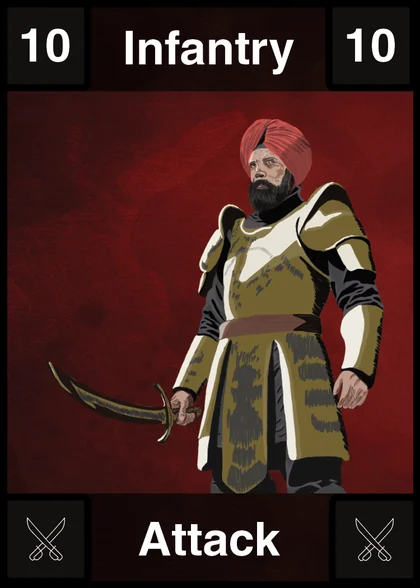
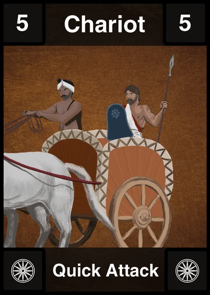
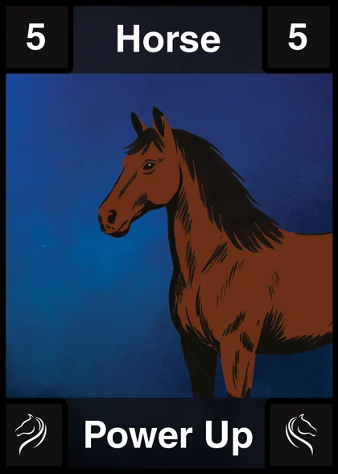
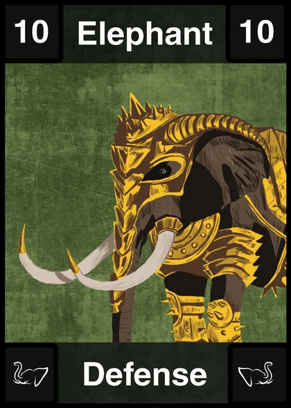
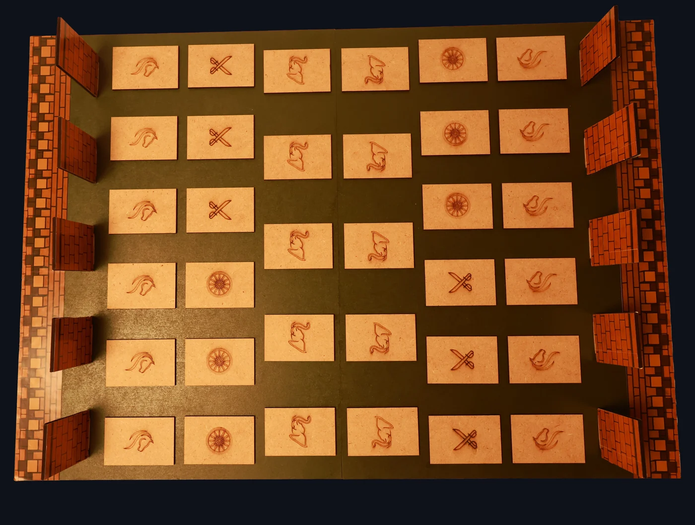
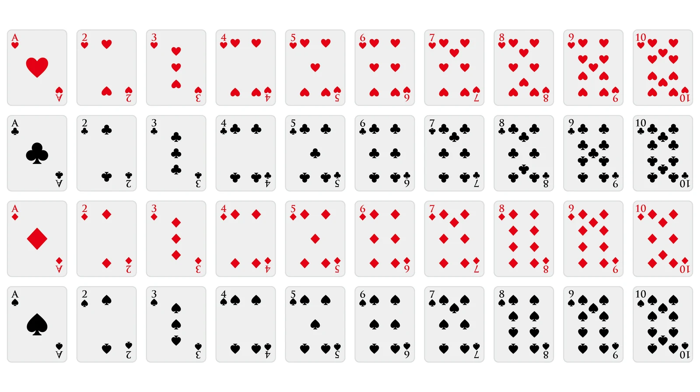
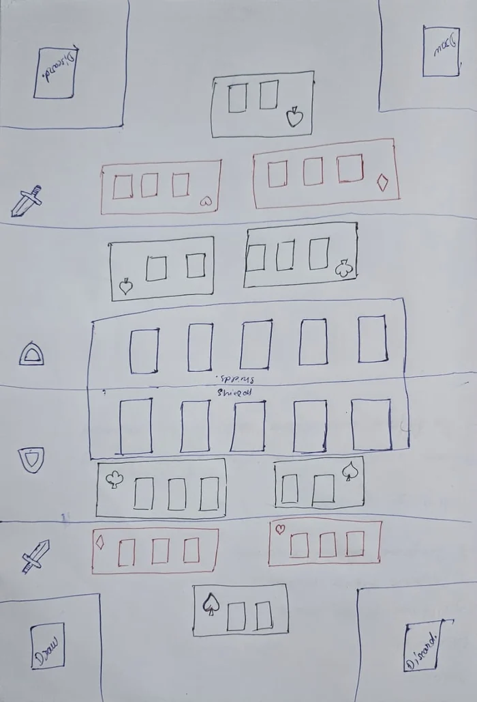
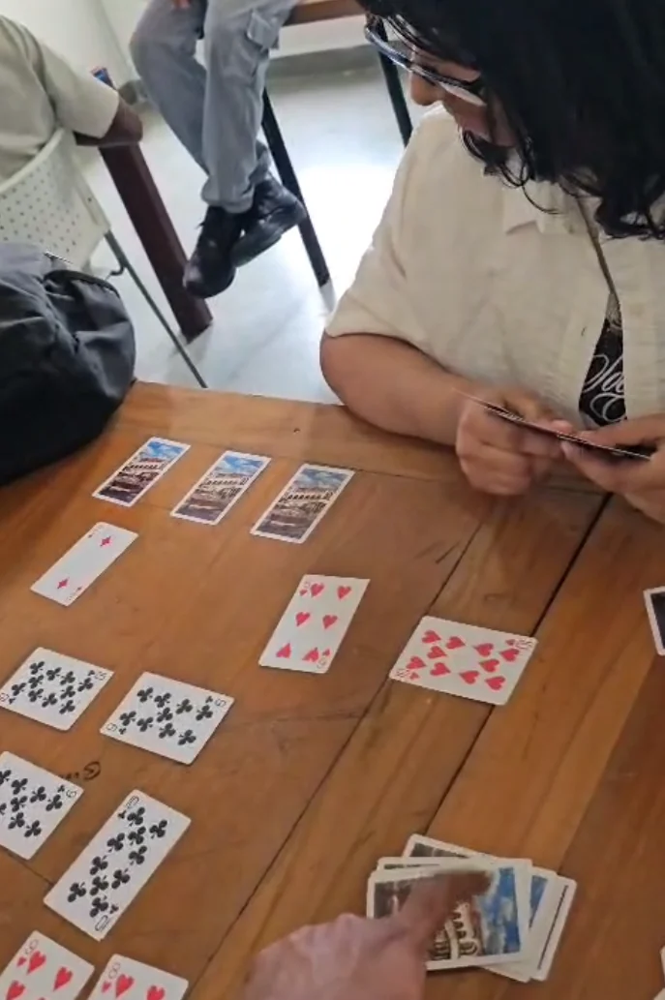
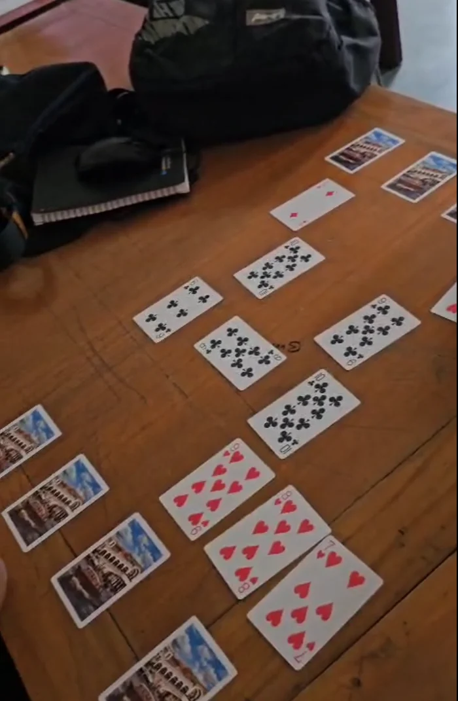

Infantry
- Can only be used to attack
- Cannot attack the same turn it is played
- Maximum of 3 on the board
A two-player tabletop game of attack and defence: build an army from a deck of cards, hold your walls and strike the enemy city.
Last Bastion is a two-player battlefield game. Each player builds an army from a deck of cards and uses it to attack and to defend. Both players start with five walls protecting their city, and the first to destroy all of the opponent's walls and strike the city wins.
It is a physical game, not a digital one: a 40-card deck, a laser-cut board with engraved tiles marking where each unit goes, and standing walls for each side. I designed the rules, the card layouts and the board, and tuned them over three rounds of playtesting.
The printed rule book that comes with the game. Flip through it with the buttons, the arrow keys, or by clicking a page.
Draw or discard until you hold six cards
Put up to two units on the board
Attack as often as you can; the opponent may defend
The opponent's turn begins
To win, destroy all of the opponent's walls and attack their city directly.
The deck has 40 cards: ten of each of four unit types, in two sets each. Every card shows its role in its title, its icon and its colour, so a player can tell what it does at a glance. I redesigned the cards this way after playtesting showed players mixing up their roles.




The prototype board is laser-cut and engraved. Each tile carries the symbol of one unit type, so players know where Horses, Infantry, Chariots and Elephants belong. Standing walls line each side.

The first version was played with an ordinary deck of cards, so I could test the rules before making custom cards or a board. Each round of playtesting changed the rules, and the final deck and board came after the third.
The game used a regular deck without the face cards, with a separate deck for each player. Each suit had its own role. Some suits could only attack, one could attack or defend, and one could only defend, with a different limit on how many could sit on the board. On a turn a player had three actions, and could spend each on placing a card or on attacking.




Players weren't getting enough chances to attack, so the game took too long to progress. There were too many defensive cards and too few offensive ones. I also noted that a single shared draw pile could add randomness.
Players could now place three cards each turn and attack any number of times. The spade could no longer attack or defend and instead powered up attacking cards, and both players drew from a single draw pile.
The board filled with cards too quickly and there were not enough power-up cards. Diamonds were too strong: they had the same attacking power as hearts and could attack the turn they were placed, with no drawback.
Players could place only two cards a turn. Up to six power-up cards could be on the board, but their power dropped to a maximum of 5 (two sets of 1 to 5). Diamond power was cut to the same range.
The lower-powered club cards weren't strong enough to defend most attacks. Players also got confused about which cards did what.
Club power rose to two sets of 5 to 10 (the final Elephants run 6 to 10). I redesigned the cards to show their roles, which became the four illustrated unit types: Infantry, Chariot, Horse and Elephant.